Luther jumps into the enemy formation and makes nearby opponents deal with him. That is the appeal of this tank: he takes the fight to their side. His legendary relic adds recurring control, retaliation damage, and a local Magic Attack reduction that gives him a clear role against magic-focused enemies.
My first question when building Luther is simple: who protects your team after he jumps? Once that position is covered, you can focus on the fun part — choosing his talisman and turning Physical Attack into damage, Magic Defense, and stronger legendary effects. Let me walk you through those choices, one skill at a time.
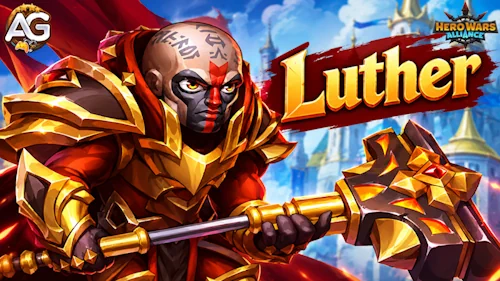
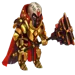
Luther is a Strength tank from the Way of Honor. His leap takes him deep into the opposing team, where his nearby stuns and legendary effects can pressure enemies around his new position.
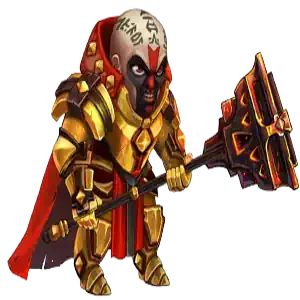
Physical Attack matters beyond his damage numbers. It also scales Doctrine of Faith's defensive bonuses and Unshakable Faith's Magic Attack reduction. That makes his offensive stat an important part of his defensive job.
Alexandre Tips: Do not leave your backline exposed when Luther jumps. I would plan a durable second frontliner, such as Tristan, before committing the rest of the lineup. Think about who will receive the next enemy attack after Luther changes position.
Compare these two maximum builds before choosing your battle setup. Higher values are shown in bold. The skill calculations below use these total stats; the individual talisman bonuses are shown separately in the next section.
| Stat | Talisman of Faith | Talisman of Purification |
|---|---|---|
Total Power | 293,238 | 299,059 |
Intelligence | 4,184 | 4,184 |
Agility | 4,128 | 4,128 |
Strength | 16,727 | 14,727 |
Health | 1,660,841 | 1,390,266 |
Physical Attack | 99,666 | 105,666 |
Magic Attack | 27,658 | 27,658 |
Armor | 69,814 | 69,814 |
Magic Defense | 48,160 | 48,160 |
Dodge | 0 | 0 |
Vampirism | 0% | 0% |
Armor Penetration | 0 | 0 |
Magic Penetration | 0 | 0 |
Critical Hit Chance | 0 | 0 |
Magical Critical Hit Chance | 0 | 0 |
Toughness | 13,381 | 21,631 |
Crushing | 0 | 0 |
Magic Reflection | 0 | 0 |
These bonuses are cumulative totals at each Relic level. Use the bonus for your current level; do not add the rows together.
| Relic Level | Total Health Bonus | Total Physical Attack Bonus | Skill Unlocked |
|---|---|---|---|
| 1 | +28,794 | +3,760 | Righteous Retribution |
| 10 | +53,269 | +6,956 | Gehenna (enhancement) |
| 20 | +146,854 | +19,176 | Doctrine of Faith (enhancement) |
| 30 | +290,824 | +37,976 | Unshakable Faith |
Only the equipped talisman supplies its bonuses in battle. Unlike accumulated skin bonuses, you cannot combine both talismans. I recommend Purification for this legendary build because Physical Attack improves several parts of Luther's kit, while Faith is the alternative when you need a larger Health pool.
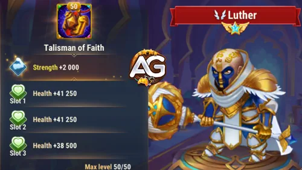
Faith adds 2,000 Strength. For Luther, this converts into 80,000 Health (2,000 × 40) and 2,000 Physical Attack (2,000 × 1). Its combined reroll bonus adds another 181,500 Health (60,500 × 3). The isolated Health contribution is therefore 261,500 (80,000 + 181,500).
| Talisman | Main Slot | Combined Reroll Bonus |
|---|---|---|
| Talisman of Faith | Strength +2,000 | Health +181,500 (60,500 × 3) |
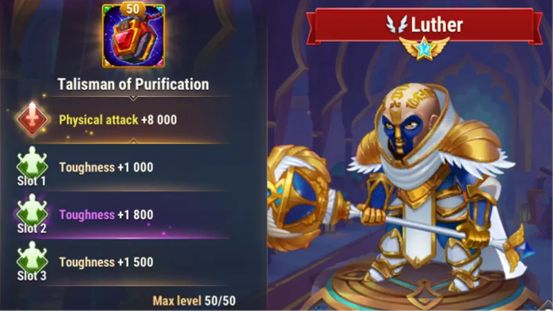
Purification adds 8,000 Physical Attack, plus 6,600 Toughness (2,200 × 3) across its rerolls. Treat those three reroll slots as one combined target. Toughness helps reduce incoming damage below 50% Health; its damage reduction depends on the attacker's main stat, so it is not a fixed percentage.
| Talisman | Main Slot | Combined Reroll Bonus |
|---|---|---|
| Talisman of Purification | Physical Attack +8,000 | Toughness +6,600 (2,200 × 3) |
Alexandre Tips: My first choice is Talisman of Purification. In the maximum builds above, it provides 6,000 more Physical Attack, improving all three direct-damage skills, Doctrine of Faith, the starting Righteousness charge, and Unshakable Faith. Choose Faith when Luther needs more Health to survive his entry. Test that survival tradeoff against the team you actually face.
Learn how Luther's skills work, compare both talisman builds, and see which legendary relic milestones improve his control, damage, and defenses.
The cards stay in skill order. Priority reflects the practical benefit of investing in the skill or reaching its relic milestone; relic levels unlock in sequence. All examples use the maximum builds above, so they compare the same build stage rather than Luther's stats at the moment a relic level unlocks. Physical damage values are before enemy mitigation.
The relic's cumulative bonuses reach 290,824 Health and 37,976 Physical Attack at level 30. Its earlier milestone totals are not separate bonuses to add together. The total requirement to level 30 is 2,880 relic shards.
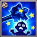
In-game description: Stuns nearby enemies and damages them.
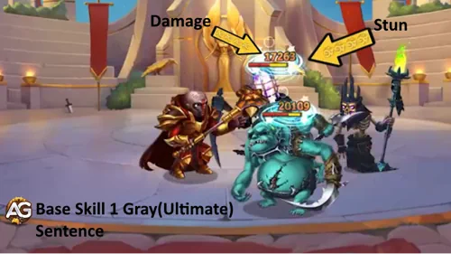
Skill Explanation: Sentence damages and stuns enemies near Luther. After Omen, that means the enemies around his landing position. Its damage is 150% Phys.atk. + 18000; the two builds produce 167,499 and 176,499. A stun prevents affected enemies from moving or attacking.
Skill Details
Evolution Priority: High — Keep this skill leveled for reliable control against suitable-level targets. Its high Physical Attack scaling also rewards investment, but its practical value is the chance to interrupt several nearby enemies.
In-game description: Luther moves deep into the enemy team, dealing damage to nearby enemies.
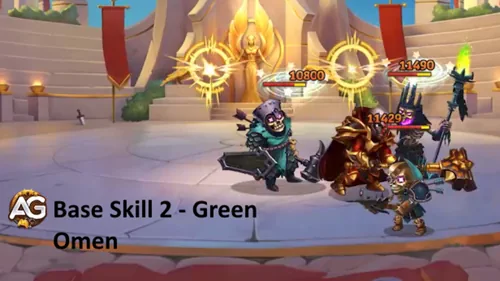
Skill Explanation: Omen changes where Luther fights: he moves deep into the enemy team and damages nearby opponents. Its 50% Phys.atk. + 12000 formula gives 61,833 with Faith or 64,833 with Purification. The move also sets up the landing trigger for base Gehenna.
Skill Details
Evolution Priority: Medium — The leap is central to his role, but the listed scaling here improves damage rather than adding a longer stun or stronger defense. I would prioritize his control reliability and defensive scaling before spending on this damage increase.
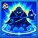
In-game description: Landing after using Omen, Luther creates a fiery wave that deals Physical Damage and stuns enemies around him for 2 seconds.
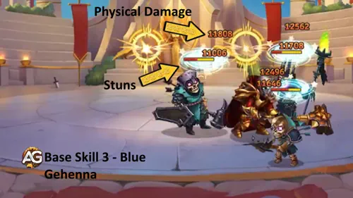
Skill Explanation: When Luther lands after Omen, the fiery wave hits enemies around him and stuns them for 2 seconds. Its 70% Phys.atk. + 12000 scaling gives 81,766.2 or 85,966.2. That pause can give your team time to act while nearby enemies are controlled.
Skill Details
Evolution Priority: High — This is the control payoff of his entry. Keep it leveled because the stun has a target-level restriction; damage also improves with Physical Attack. The legendary enhancement makes that investment relevant beyond the initial landing.
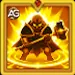
In-game description: Now, the skill triggers every 11 seconds.
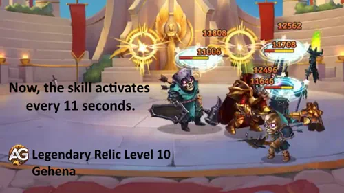
Skill Explanation: The enhancement makes Gehenna trigger every 11 seconds. It keeps the base damage formula and 2-second stun, turning the landing wave into recurring nearby control. The same maximum-build damage values remain 81,766.2 with Faith and 85,966.2 with Purification.
Skill Details
| Info | Value |
|---|---|
| Relic Shards Necessary (Level 2–10) |
280
|
| Total Relic Shards Necessary (Level 0–10) |
330
|
| Total Physical Attack Bonus (Level 0–10) |
+6,956
|
| Total Health Bonus (Level 0–10) |
+53,269
|
Evolution Priority: Very High — I consider level 10 a valuable early milestone: repeated control can protect Luther and disrupt nearby enemies throughout a longer battle. This benefit is useful beyond magic-focused matchups.
In-game description: Passive skill. Increases own Magic Defense. Each time Luther takes Magic Damage, he increases his Magic Defense further for 4 seconds.
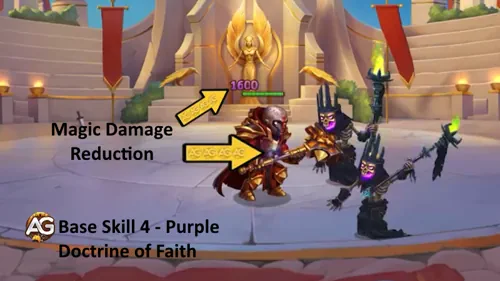
Skill Explanation: Luther gains permanent Magic Defense from 10% Phys.atk. + 1800: 11,766.6 with Faith or 12,366.6 with Purification. Taking Magic Damage adds a further 4-second bonus of 10% Phys.atk. + 1200, giving 11,166.6 or 11,766.6. These are skill bonuses, not a replacement for his displayed Magic Defense.
Skill Details
Evolution Priority: Very High — For his anti-mage role, this is a core investment. Magic Defense helps him withstand magic pressure and also contributes to Righteous Retribution's charge increases. Its value is lower when the enemy deals little Magic Damage.
In-game description: Now, when taking Magic Damage, Luther also increases his Armor Penetration for 4 seconds.
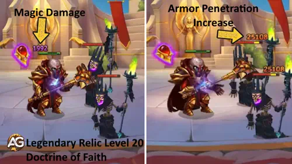
Skill Explanation: Taking Magic Damage now also grants Armor Penetration for 4 seconds. The bonus is 10% Phys.atk. + 400: 10,366.6 with Faith or 10,966.6 with Purification. While active, it helps his physical damage overcome enemy Armor.
Skill Details
| Info | Value |
|---|---|
| Relic Shards Necessary (Level 11–20) |
800
|
| Total Relic Shards Necessary (Level 0–20) |
1,130
|
| Total Physical Attack Bonus (Level 0–20) |
+19,176
|
| Total Health Bonus (Level 0–20) |
+146,854
|
Evolution Priority: Medium–High — This improves damage pressure when enemies feed him Magic Damage. It is more conditional than recurring Gehenna control, but it supports his physical skills and retaliation against armored targets.
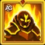
In-game description: Every 12 seconds, Luther starts accumulating Righteousness. All incoming damage charges it for 8 seconds. When the timer expires or when Luther dies, he deals Physical Damage equal to accumulated charge to enemies around him.
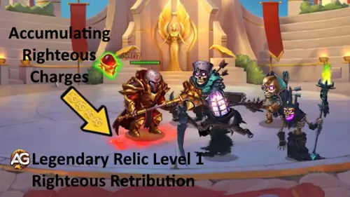
Skill Explanation: Luther begins accumulating Righteousness every 12 seconds. The starting charge is 20% Phys.atk.: 19,933.2 with Faith or 21,133.2 with Purification. During the 8-second window, taking damage increases the charge by 10% of current Magic Defense. When the window ends, or Luther dies while charging, nearby enemies take Physical Damage equal to the accumulated charge. This is not a fixed percentage of the incoming damage amount.
Skill Details
| Info | Value |
|---|---|
| Relic Shards Necessary (Level 0–1) |
50
|
| Total Relic Shards Necessary (Level 0–1) |
50
|
| Total Physical Attack Bonus (Level 0–1) |
+3,760
|
| Total Health Bonus (Level 0–1) |
+28,794
|
Evolution Priority: High — The first relic level adds a new damage source that fits a tank standing among enemies. Doctrine of Faith can strengthen its charge gains, but the final total depends on damage events and Luther's current Magic Defense, so it is not a guaranteed fixed burst.
In-game description: While Luther is alive, all enemies around him have their Magic Attack decreased.
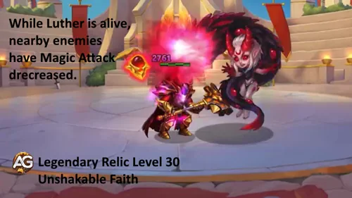
Skill Explanation: While Luther remains alive, nearby enemies lose Magic Attack equal to 100% Phys.atk.. That is a reduction of 99,666 with Faith or 105,666 with Purification. It weakens effects that scale with those enemies' Magic Attack. It applies around Luther, so his location and survival both matter.
Skill Details
| Info | Value |
|---|---|
| Relic Shards Necessary (Level 21–30) |
1,750
|
| Total Relic Shards Necessary (Level 0–30) |
2,880
|
| Total Physical Attack Bonus (Level 0–30) |
+37,976
|
| Total Health Bonus (Level 0–30) |
+290,824
|
Evolution Priority: Very High — This is the long-term target for a dedicated anti-mage Luther. It affects nearby casters for as long as he stays alive, and Purification increases its strength. Its value falls against teams that do not depend on Magic Attack; reaching it still requires progressing through every earlier relic level.
Choose Luther's skin priority around survival and Physical Attack, with clear bonuses and practical reasons to build his legendary relic setup.
My first offensive investment is Stellar, because Physical Attack improves both his damage and several defensive or anti-mage effects. If he dies soon after Omen, prioritize Default and Cybernetic for survival. The cards follow the in-game skin order; their colored priorities show where I would spend first. Skin bonuses accumulate, so the appearance you equip does not limit you to one skin bonus.
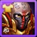
Maximum Bonus: Strength +1,365. For Luther, this also means Health +54,600 (1,365 × 40) and Physical Attack +1,365 (1,365 × 1).
Evolution Priority: High — Strength gives a useful mix of durability and skill scaling. It is a dependable early choice, especially if Luther struggles to survive his entry.
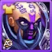
Maximum Bonus: Physical Attack +7,095.
Evolution Priority: Very High — Physical Attack improves his direct damage, Doctrine of Faith, the initial Righteousness charge, and Unshakable Faith. It offers the broadest skill benefit once he can stay alive.
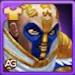
Maximum Bonus: Armor +10,650.
Evolution Priority: Medium — Armor helps against physical pressure after his leap. Move this up when physical attackers are the reason he dies; it does not directly strengthen his skill formulas.
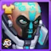
Maximum Bonus: Health +106,645.
Evolution Priority: High — More Health gives Luther room to survive the entry and remain close to enemies. Survival is essential for recurring control and the level-30 aura.
Maximum Bonus: Magic Defense +10,687.
Evolution Priority: Medium–High — Magic Defense supports his anti-mage role and increases Righteousness charge gains while he takes damage. Favor it when magic pressure is the problem.
Maximum Bonus: Armor +10,650.
Evolution Priority: Medium — This supplies the same Armor bonus as Angel. Treat the two as equal-value defensive upgrades and prioritize whichever you already have available.
Maximum Bonus: Toughness +2,960.
Evolution Priority: Medium — Toughness helps him withstand damage below 50% Health. Build his basic survival first, then use this to improve his ability to stay in the fight at low Health.
Maximum Bonus: Toughness +2,960.
Evolution Priority: Medium — It provides the same Toughness bonus as Sport, so neither has a stronger stat payoff at maximum level. Choose between them based on access and existing investment.
Plan Luther's artifact upgrades around team protection, personal defense, and Strength, while keeping each item's long-term battle value clear.
My general order is Ring → Book → Weapon for Luther’s own survival and scaling. Move the Weapon higher when your whole team needs protection from physical damage. These are level-100, six-star bonuses.
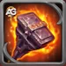
Team Bonus: Armor +32,040. Using Sentence activates the team Armor bonus for 9 seconds. At six stars, the activation chance is 100%.
Evolution Priority: Medium–High — This protects the whole team against physical damage, including the allies left behind after Omen. It is especially useful when their survival depends on the next ultimate activation.
Permanent Bonuses: Armor +8,010 and Magic Defense +8,010.
Evolution Priority: High — Both defenses help Luther survive among enemies. Magic Defense also strengthens the charge gained by Righteous Retribution when he takes damage, giving this book an additional benefit.
Permanent Bonus: Strength +3,990. This grants Health +159,600 (3,990 × 40) and Physical Attack +3,990 (3,990 × 1).
Evolution Priority: Very High — The combination of Health and Physical Attack improves his ability to stay alive while strengthening multiple skills. It is my most balanced artifact investment for this legendary build.
Build Luther's glyphs with a clear upgrade order, balancing Health and Physical Attack so he can survive his jump and keep his relic skills useful.
For a Luther who already survives his entry, my order is Physical Attack → Strength → Health → Magic Defense → Armor. If he falls early, move Health and Strength ahead of Physical Attack. Choose between Magic Defense and Armor according to the damage type that defeats him.
Level 80 Stats: Physical Attack +8,340.
Evolution Priority: Very High — This improves his physical skills and strengthens the attack-based defensive and anti-mage effects. Prioritize it when Luther survives long enough to use those benefits.
Level 80 Stats: Health +122,800.
Evolution Priority: High — Health keeps him alive through the jump and extends the time his nearby effects can matter. It also scales the Tank class protection effect.
Level 80 Stats: Magic Defense +12,850.
Evolution Priority: Medium–High — This supports magic survivability and Righteousness charge gains. Raise its priority against teams whose Magic Damage threatens Luther.
Level 80 Stats: Armor +12,850.
Evolution Priority: Medium — Armor is valuable when physical damage is the cause of early deaths. Against those opponents, move it ahead of Magic Defense.
Level 80 Stats: Strength +2,110. This converts into Health +84,400 (2,110 × 40) and Physical Attack +2,110 (2,110 × 1).
Evolution Priority: Very High — Strength combines Health with Physical Attack, so it improves survival and several skills together. It is an excellent early investment when Luther needs both.
Alexandre Tips: The Tank class effect protects the ally with the lowest Health percentage every 10 seconds, increasing Armor and Magic Defense for 5 seconds. Luther himself can receive it. Its formula is 1% Health + 24750, so Health investment can also improve this team protection.
Luther wants to remain beside vulnerable enemies. Displacement can interfere with that plan by changing the targets reached by his nearby stuns, retaliation, and Magic Attack reduction.
Cascade can pull Luther back toward the enemy team. Repositioning him can change which enemies are inside the range of his nearby effects. I would watch the timing after Omen: moving Luther away from an intended target can reduce the value of his jump, but displacement alone does not guarantee a win.
Faceless can also pull Luther back toward the enemy team. Luther depends on proximity for Sentence, Gehenna, Righteous Retribution, and Unshakable Faith, so a change in position can disrupt his intended pressure. The practical result depends on where he ends up and which enemies remain around him.
I build around two needs: someone must hold the original frontline, and the team must benefit from the disruption Luther creates. These partners offer different ways to cover those needs.
Astaroth can serve as the primary tank while Luther jumps into the opposing formation. That division lets Luther focus on nearby control without making the rest of the lineup depend on him staying in front.
In the Artemis, Tristan, and Luther lineups, Fafnir provides support while Luther handles disruption. The goal is to give the damage dealers room to act during Luther’s stuns; keep a durable ally in the frontline after the jump.
Galahad contributes damage and can serve as a secondary tank in the Artemis lineup. His presence helps cover the position Luther leaves, allowing the team to keep pressure on the front while Luther disrupts enemies deeper in the formation.
Julius adds shields and healing to support the team’s survival while Luther disrupts the enemy formation. I would consider this pairing when the rest of the lineup needs more protection after Omen.
Kayla and Luther can both jump into the opposing formation. That creates pressure away from the original frontline, but it also makes a durable ally there especially important. The Aidan and Tristan lineups below offer examples of this approach.
Tristan is the durable Strength ally I would consider first for the position Luther leaves behind. Both featured teams use this pairing. Build Tristan to withstand that responsibility: Luther’s successful jump does not help if your exposed allies collapse immediately.
Start with these two lineups and their listed talismans, then test against the opponent you want to defeat. My first check is whether Tristan can hold the front after Luther jumps; my second is whether Luther stays alive close to the targets he needs to disrupt.
Luther and Tristan form the core, with Crow, Guus, and Eva completing the lineup. Luther uses Purification to strengthen his attack-based effects while Tristan covers the position he leaves. For this version, I would first check that Luther reaches the intended enemies and that the remaining four allies survive his move. His nearby stuns can then create opportunities for the team to apply pressure.
| Luther · Tristan · Crow · Guus · Eva | ||||
|---|---|---|---|---|
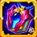 Eva — Talisman 1 |
Guus — Talisman 2 | Crow — Talisman 2 | Tristan — Talisman 2 | Luther — Talisman 2 |
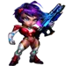 Eva |
Guus | Crow | 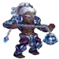 Tristan |
Luther |
This version replaces Eva with Oya while keeping Luther, Tristan, Crow, and Guus. The central plan stays the same: Luther disrupts the opposing formation and Tristan holds the front. Compare this lineup with Team 1 against the same opponent and look at who falls first and whether the team finishes targets during Luther’s control windows. That comparison is more useful than assuming the substitution wins every matchup.
| Luther · Tristan · Oya · Crow · Guus | ||||
|---|---|---|---|---|
| Guus — Talisman 2 | Crow — Talisman 2 | Oya — Talisman 2 | Tristan — Talisman 2 | Luther — Talisman 2 |
| Guus | Crow | Oya | Tristan | Luther |
Alexandre Tips: Both teams use Luther’s Talisman of Purification. Keep that as your starting setup, then consider Faith if his survival is the limiting factor. Compare replays with one change at a time so you can see whether the extra Health or stronger attack-based effects help more.
These older combinations offer options when your roster differs from the two featured teams. Treat them as alternative starting points and test them against your intended opponent.
I would build Luther when I need a tank who can disrupt the enemy formation and put pressure on nearby casters. His legendary relic gives that plan more depth: recurring Gehenna stuns at level 10, conditional Armor Penetration at level 20, and a local Magic Attack reduction at level 30. The key is keeping him alive in the right position while another durable ally covers the front he leaves behind.
My starting build: Talisman of Purification, Physical Attack investment through Stellar and glyphs, and Strength upgrades for a mix of Health and skill scaling. If he dies soon after Omen, improve his survival first and compare Faith against Purification. A stronger formula only helps when Luther stays in the fight long enough to use it.
My first team to test: Luther, Tristan, Crow, Guus, and Eva with the talismans shown above. Then compare the Oya version against the same opponent. Watch who holds the front after the leap, which enemies Luther reaches, and whether his control creates time for your team to finish targets. Those details are how I would decide which version fits your roster and matchup.
Leave Your Opinion!
How does Luther perform in your team? Share which talisman you use, the relic level you have reached, and the opponents you find most difficult. If something in this guide is unclear or you have a suggestion, join the discussion below.